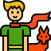

Le temps apprivoisé
Le temps apprivoisé
Sur l’astéroïde B-612, chaque session devient une rose.
Choisis ta durée de focus

10:00

Bienvenue sur Flow Garden. Ici,les petites choses deviennent importantes….
Trouve ton rythme, organise ta journée, et fais fleurir des petites victoires.
Flow Garden rend la concentration plus douce, plus visuelle, plus inspirante
Sur l’astéroïde B-612, chaque session devient une rose.
Choisis ta durée de focus
Les choses à faire...
Aucune tâche pour le moment.
Commence par en ajouter une !
Chaque session de focus fait pousser une rose
Ton Jardin est encore vide ...
Complète une session de focus pour voir ta première rose pousser !